타임소프트콘 - 연차 경매 시스템 (B2E 연차 경매·에스크로 배당 플랫폼) · 김기철, 오지석
시안 기준 prototypes/ + frontend 라우트
/ 와 알 수 없는 경로는 /login으로 리다이렉트. /admin/*는 RequireAdmin, 나머지 보호 화면은 RequireAuth 가드 안에서만 렌더된다.
| 경로 | 화면 | 가드 | 시안 | 데이터 |
|---|---|---|---|---|
/login | 로그인 | — | ○ | API POST /api/auth/login |
/dashboard | 대시보드 | Auth | ○ | 잔액 · OPEN 경매 · 예상 배당 · 휴가 잔여 |
/auction · /row · /timeline | 경매장(3뷰) | Auth | ○ | API /api/auctions |
/auction/detail | 입찰 상세 ★ | Auth | ○ | 상세 + 입찰 POST + SSE 스트림 |
/auction/bid-variants | 입찰 인터랙션 변주 | Auth | ○ | 정적(의도) |
/activity | 내 활동 | Auth | ○ | 거래 내역 · 요약 · 잔액 · 휴가 |
/dividend | 연말 배당 ★ | Auth | ○ | API /api/dividend/me/:id |
/redemption | 복지 교환몰 | Auth | – | API /api/redemption/* (ADR-023) |
/admin/ops | 관리자 운영 | Admin | ○ | 통계 + 예정/유찰 경매 + 정산 |
/admin/ledger | 관리자 원장 | Admin | ○ | API /api/admin/ledger |
/admin/members | 회원/권한 관리 | Admin | – | API /api/admin/members* |
/admin/auctions | 경매 생성/스케줄/정산 | Admin | – | API /api/admin/auctions* |
/admin/redemption · /admin/store | 교환 승인 / 품목 관리 | Admin | – | API /api/admin/redemption* |
○ 디자인 시안 보유(§2~3에 수록) · – 시안 없이 구현(초기 SRS 이후 추가 화면). 시안 PDF 모음은 prototypes.pdf.
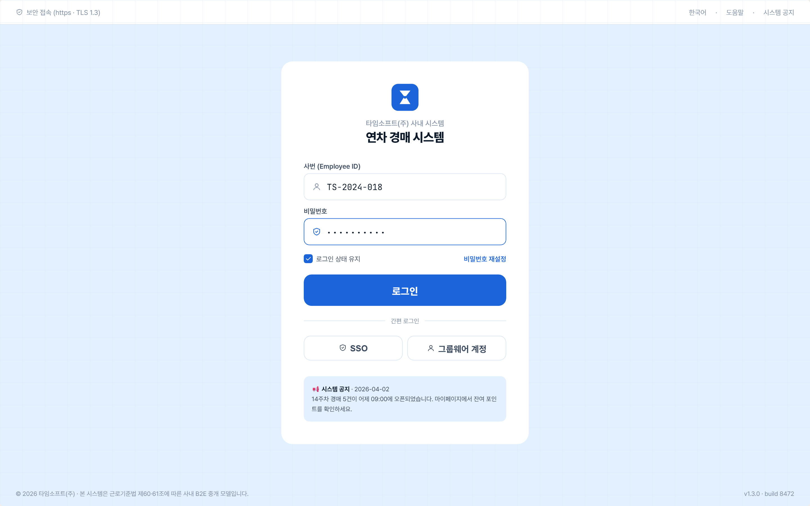
POST /api/auth/login → JWT 발급 후 대시보드 이동. delegated(ezpass 위임)/local 2모드(F-1.1).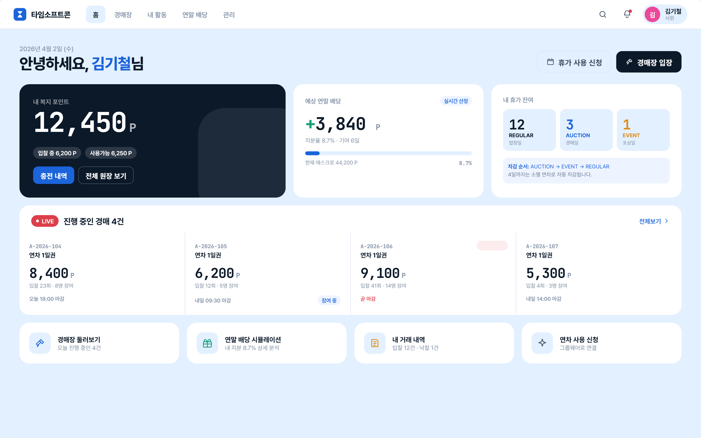
동일 매물 목록을 그리드 / 리스트(행) / 타임라인 3가지 레이아웃으로 제공 — 사용자 선호에 따라 전환.
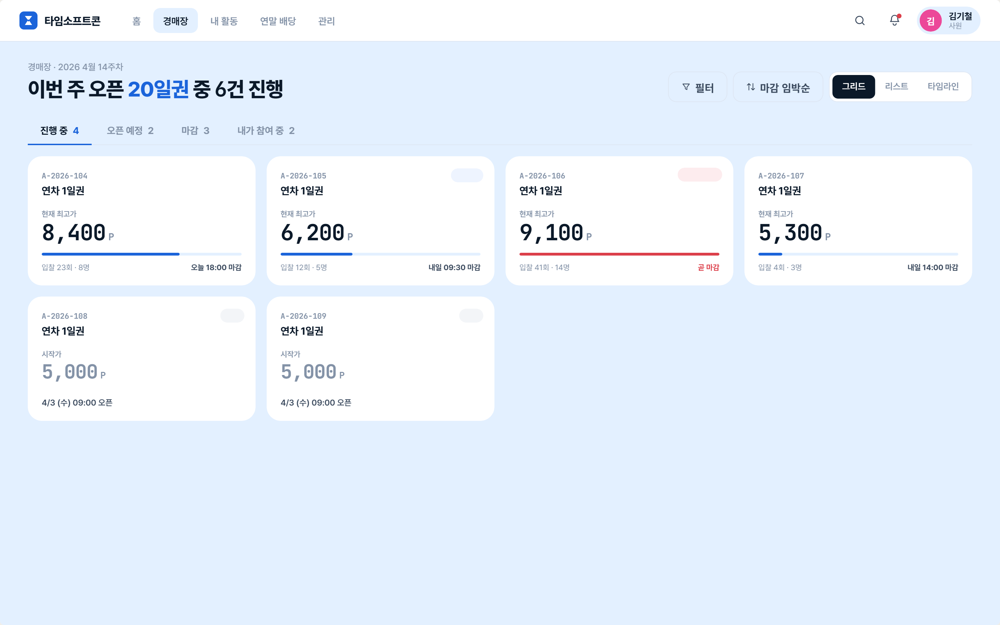
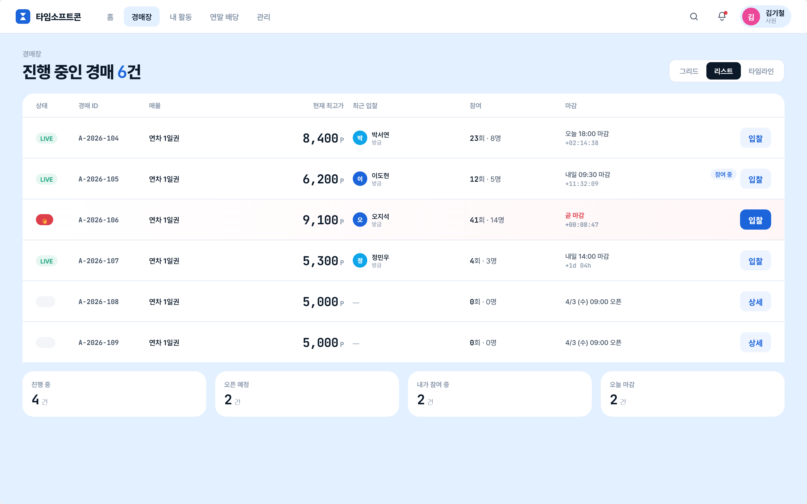
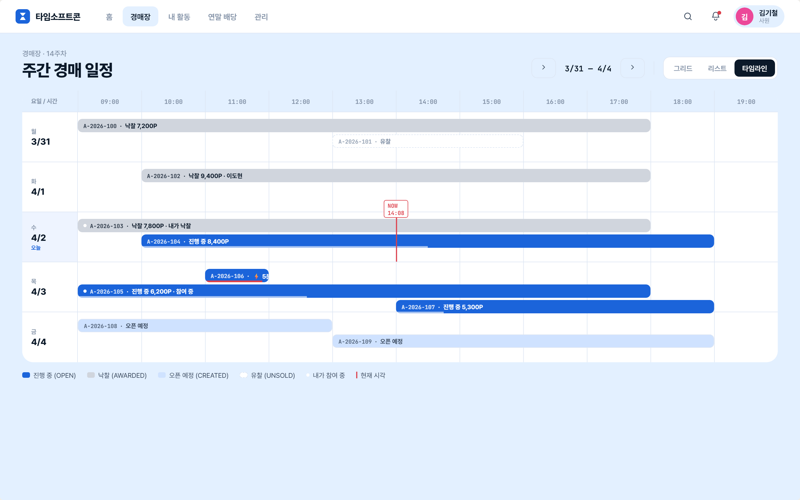
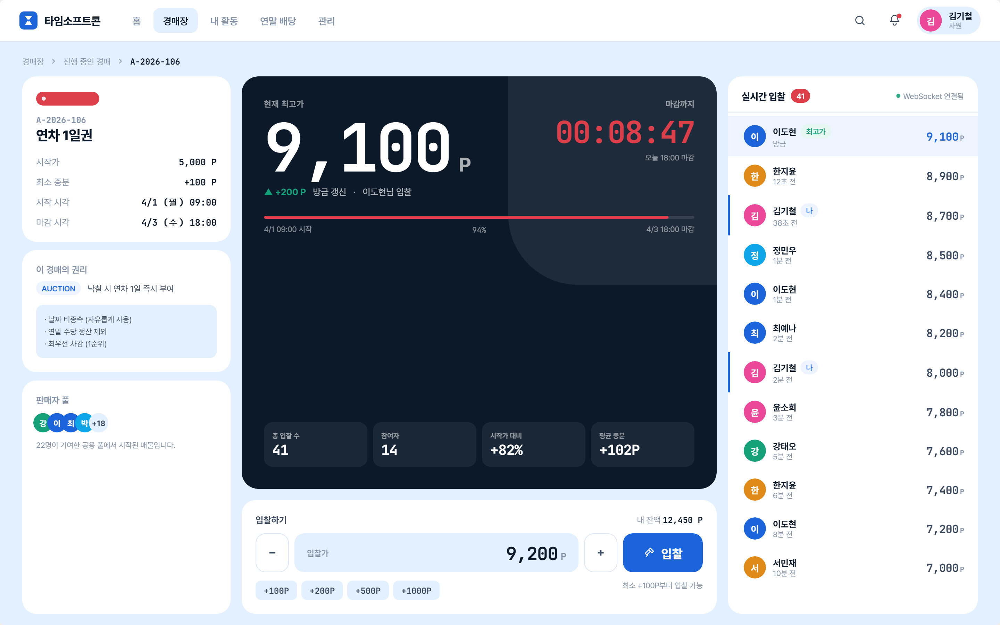
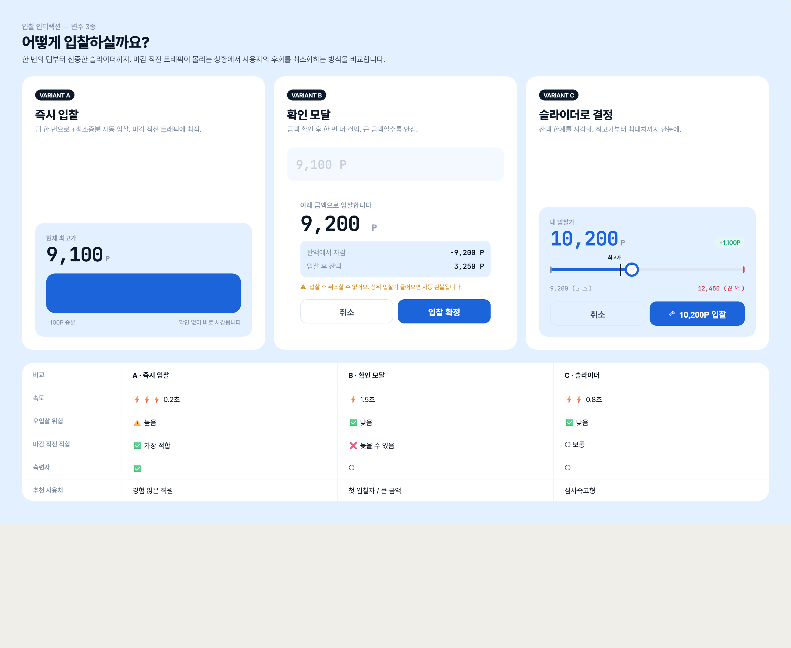
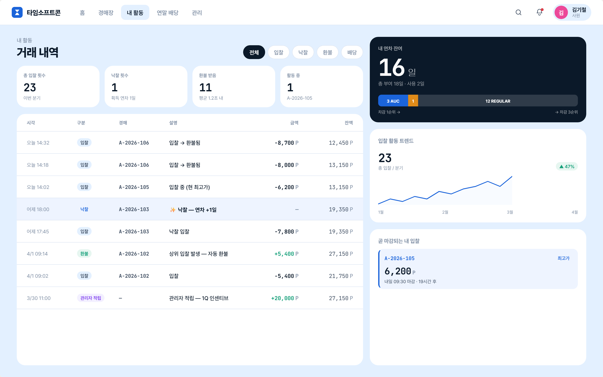
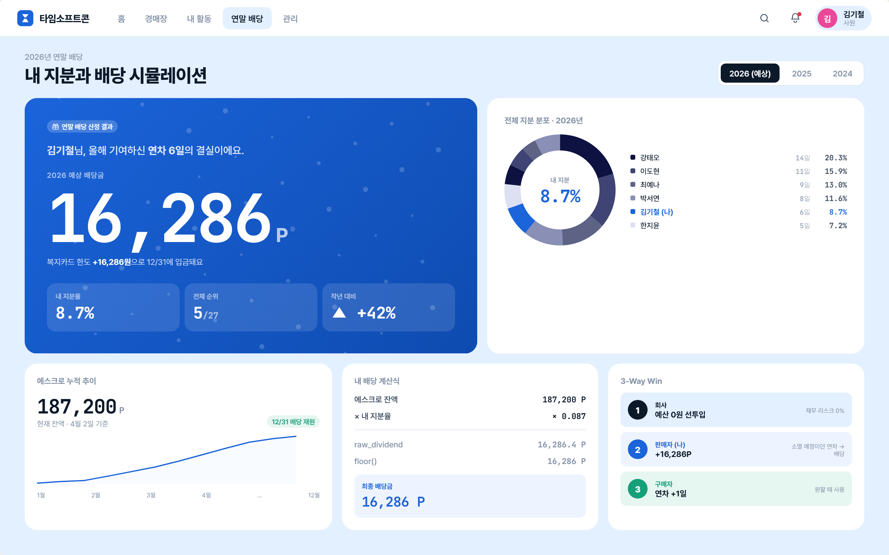
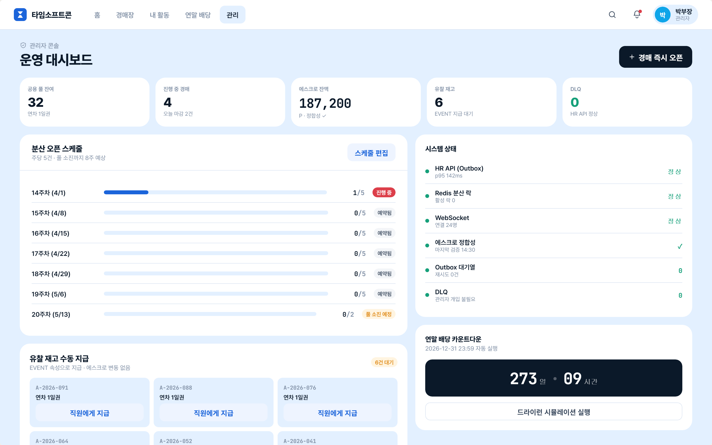
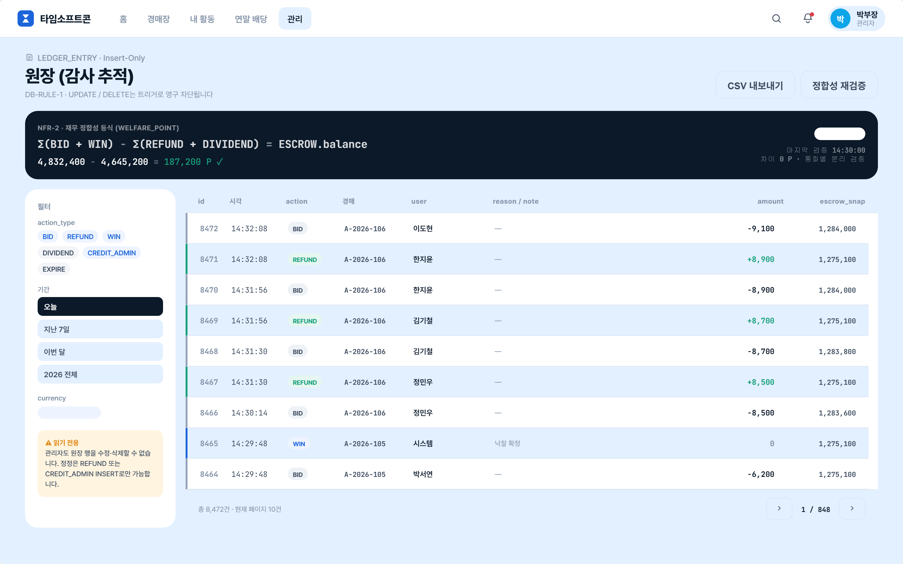
action_type 필터(BID/REFUND/…)·페이지네이션. Insert-Only 원장 감사 뷰(F-8.3).초기 SRS 이후 개발 중 추가된 화면으로 디자인 시안(PNG)은 없으나 구현·동작한다. 상세 동작은 기능 명세서 참조.
| 경로 | 화면 | 기능 |
|---|---|---|
/admin/members | 회원/권한 관리 | 회원 동기화·권한, 관리자 콘 적립(F-8.1) |
/admin/auctions | 경매 생성/스케줄/정산 | 매물 생성·운영·청산(F-3.x), 풀 수집·발행 |
/admin/redemption | 교환 요청 승인 | 교환 신청 승인/반려(F-9.2) |
/admin/store | 교환 품목 관리 | 품목 CRUD·활성화·감사(F-9.2) |
| 규칙 | 내용 |
|---|---|
| 실시간 렌더링 | 입찰 상세의 마감 타이머·최고가는 SSE로 화면 새로고침 없이 갱신(NFR-3, WebSocket 대체 CUT-6) |
| 금액 표시 | 백엔드가 bigint를 문자열로 직렬화(BigIntInterceptor) → 프런트가 표시 직전 Number() 변환(금액 ≤ 107, float64 안전) |
| 가드/권한 | RequireAuth / RequireAdmin으로 화면 보호. 토큰 없으면 /login 리다이렉트 |
| 피드백 | 입찰 성공·자동 환불 등은 우상단 토스트로 즉시 알림 |
| 데모 사용자 전환 | 로그인 화면 또는 우상단 아바타로 시드 사용자 전환(localStorage) |